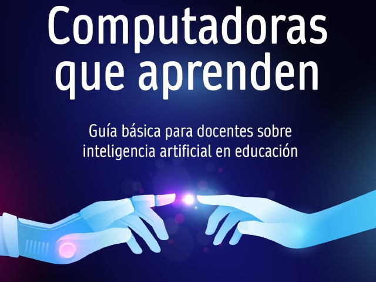

Intel·ligència artificial¶
Curs d’intel·ligència artificial¶
Curs en línia gratuït Elements de IA <https://course.elementsofai.com/es/> __.
Reservar ordinadors que aprenen¶
El món de la intel·ligència artificial ha generat molts debats i opinions entre experts i personalitats influents, ja el 2014, Stephen Hawking, un dels científics més reconeguts del nostre temps, va advertir sobre els possibles perills de la IA i la seva capacitat de superar la humanitat. Amb el pas del temps, Elon Musk, un empresari innovador, ha defensat un enfocament ètic responsable i ètic en el desenvolupament de la IA, argumentant que pot ser una eina valuosa per resoldre problemes del nostre món, però sempre sota una regulació estricta.
Els dos punts de vista són importants a l’hora de comprendre els reptes i les oportunitats que ofereix aquesta tecnologia, especialment quan s’apliquen a l’educació.
És per això que el valuós que representa aquest llibre escrit per Diego Craig, un professional amb una formació sòlida i una àmplia experiència en el camp de la tecnologia educativa, que té la intenció d’introduir el lector en els conceptes clau de la intel·ligència artificial i la seva aplicació en l’àmbit educatiu.
Es tracten temes com l'impacte de Chatgpt, explorant les opinions i els debats que envolten el seu ús; Els problemes ètics, la privadesa, les definicions, el seu ús per al diàleg i les aplicacions pràctiques s’examinen en diversos contextos.
Diego Craig proporciona una introducció als conceptes clau de la IA i la seva aplicació en educació, abordant tant aspectes positius com possibles reptes i riscos.

Vídeos Dotcsv¶
Vídeos de Jaime Altozano¶
- Vídeo: "Què fa realment " Intel·ligència artificial "? Subespais, pareidolies i creativitat. <https://www.youtube-nocookie.com/embed/3emmj3roos>`__
- Vídeo: Jaime Altozano. Parlem d’intel·ligències artificials.
Vídeos TED¶
Vídeos de Veritasium¶
Informàtica i intel·ligència artificial.